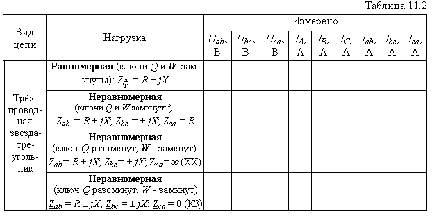
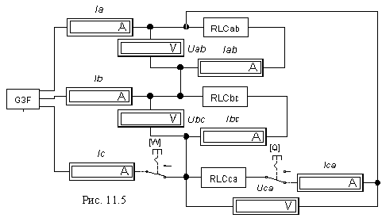
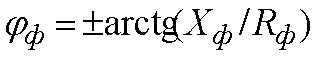

Задание 3. Экспериментально определить соотношения между линейными и фазными напряжениями и токами в различных режимах при соединении источника и приёмника по схеме звезда-треугольник.
С этой целью:
1. 1. Собрать схему (рис. 11.4, а) на рабочем поле программы EWB или на рабочем поле программы MS8 Education (либо открыть файл Lr11.ewb при работе в среде EWB или файл Lr11.ms8 при выполнении работы в среде MS8SD). Режимы и параметры устройств и элементов указаны в задании 1.
Таблица 11.2

2. После проверки собранной схемы цепи запустить программу EWB или программу MS8SD. Показания измерительных приборов при равномерной и неравномерной нагрузке, в т. ч. при обрыве фазы ca и линейного провода C (состояния ключей и сопротивления фаз указаны в таблице) занести в табл. 11.2.

Убедиться в равенстве фазных, а также линейных токов при равномерной нагрузке фаз приёмника.
3. По данным эксперимента построить векторные диаграммы фазных напряжений, фазных и линейных токов (в масштабе) цепи при неравномерной нагрузке, в т. ч. при обрыве фазы са и линейного провода С. Фазные углы определить по формуле . Убедиться, что построенные векторные диаграммы напряжений и токов соответствуют диаграммам калькулятора ElCalc. Обратить внимание на изменение линейных токов при обрыве фазы са и фазных токов при обрыве линейного провода С.
Сравнить значения построенных векторов линейных токов IА, IВ и IС с их экспериментальными значениями.